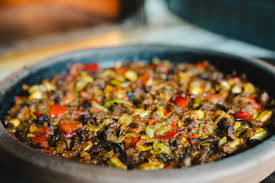
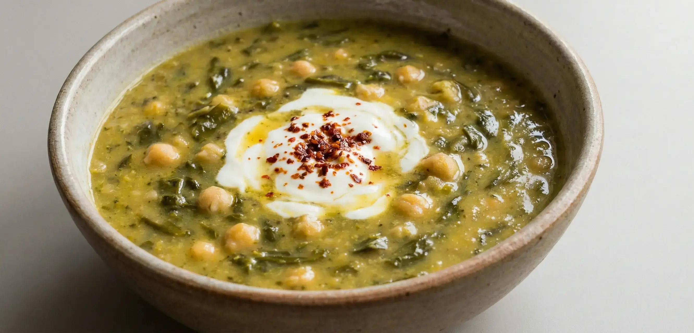
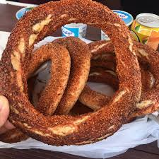

Kültürel Özellikler ve Gelenekler
Osmaniye, Çukurova kültürünün en saf yaşandığı merkezlerden biridir. Yüzyıllardır süregelen yaylacılık geleneği günümüzde de aktif olarak devam etmektedir. Yaz aylarında halkın büyük kısmı serinlemek amacıyla Zorkun Yaylası başta olmak üzere çevre yaylalara göç eder.
Ayrıca Karatepe kilimleri, kök boyasıyla yapılan tamamen doğal ve el emeği motifleriyle şehrin en önemli kültürel simgelerinden biridir. Her yıl düzenlenen Uluslararası Çukurova Karacaoğlan Kültür ve Sanat Şenlikleri ile Osmaniye Yer Fıstığı Festivali şehrin kültürel dinamizmini canlı tutmaktadır.
Yöresel Lezzetler
Osmaniye mutfağı, Akdeniz ve Doğu Anadolu mutfağının muhteşem bir sentezidir. Bulgur ve et yemekleri ön plandadır.
1. Zorkun Tavası
Kuzu eti, domates, biber ve sarımsağın özel baharatlarla harmanlanarak fırına verilmesiyle yapılan, adını Zorkun Yaylası'ndan alan efsanevi bir yemektir.

2. Tırşık Çorbası
Yaban pancarı (tırşık) otundan yapılan, yapımı oldukça zahmetli olan ama şifa niyetine içilen ekşili, yöresel bir çorbadır. "Çukurova'nın andızı" olarak da bilinir.

3. Osmaniye Simidi
Türkiye'nin diğer yerlerindeki simitlerden farklı olarak daha ince, çıtır ve pekmezle harmanlanmış odun ateşinde pişen nefis bir sokak lezzetidir.
